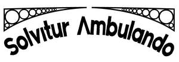

Trade Mark Journal No.2025/012 21 March 2025
UK00004169937 6 March 2025 (18,21,25)

- Class 18
- Bags; Tote bags; Duffle bags; Duffel bags; Carry-on bags; Toiletry bags; Bags for clothes; Drawstring bags; Carry-all bags; Belt bags and hip bags; Carrying bags; Grocery tote bags; Cross-body bags; Bags for umbrellas; Luggage, bags, wallets and other carriers; Crossbody bags; Cloth bags; Bucket bags; Leather bags; Sling bags; Canvas bags; Duffel bags for travel; Shoe bags; Belt bags; Clutch bags; Wheeled bags; Kit bags; Travel bags; Bags for travel; Souvenir bags; Garment bags; Messenger bags; Leather bags and wallets; Toilet bags; Shoulder bags; Waterproof bags; Cosmetic bags; Reusable shopping bags; Camping bags; Umbrella bags; Towelling bags; Courier bags; Bags for campers; Roll bags; Hand bags; Gym bags; Knitted bags; Travelling bags; Attaché bags; Cabin bags; Flight bags; Traveling bags; Overnight bags; Beach bags; Bags for climbers; Boot bags; Mesh shopping bags; Mesh bags for shopping; Canvas shopping bags; Hiking bags; Knitting bags; Bum bags; Frames for bags [structural parts of bags]; Roller bags.
- Class 21
- Bottles; Glass bottles; Plastic bottles; Water bottles; Drinking bottles; Reusable bottles; Plastic water bottles; Biodegradable bottles; Insulated bottles [flasks]; Bottle pourers; Refrigerating bottles; Bottles (Refrigerating -); Plastic water bottles [empty]; Water bottles for bicycles; Empty water bottles for bicycles; Bottle coolers [receptacles]; Vacuum bottles; Water bottles sold empty; Aluminum water bottles; Reusable plastic water bottles sold empty; Water bottles for bicycles, sold empty; Covers for water bottles; Aluminum water bottles, empty; Bottles, sold empty; Stands for bottles; Bottle openers; Drinking bottles for sports; Sports bottles sold empty; Beer jugs; Reusable stainless steel water bottles sold empty; Drinks containers; Reusable stainless steel water bottles; Insulated vacuum bottles.
- Class 25
- Clothing; Jackets [clothing]; Ready-to-wear clothing; Linen clothing; Headbands [clothing]; Headbands for clothing; Gloves [clothing]; Gloves as clothing; Clothes; Kerchiefs [clothing]; Jerseys [clothing]; Shorts [clothing]; Parts of clothing, footwear and headgear; Knitted clothing; Windproof clothing; Hoods [clothing]; Embroidered clothing; Wristbands [clothing]; Belts [clothing]; Belts for clothing; Rainproof clothing; Casual clothing; Waterproof clothing; Jackets being sports clothing; Jackets (Stuff -) [clothing]; Stuff jackets [clothing]; Bottoms [clothing]; Clothing for leisure wear; Woven clothing; Leisure clothing; Clothing for sports; Sports clothing; Athletic clothing; Tops [clothing]; Weatherproof clothing; Pockets for clothing; Water-resistant clothing; Handwarmers [clothing]; Men's clothing; Hats; Beanie hats; Toques [hats]; Bobble hats; Woolly hats; Baseball hats; Fashion hats; Bucket hats; Baseball caps and hats; Sports caps and hats; Rain hats; Sun hats; Beach hats; Small hats; Beanies; Caps [headwear]; Caps being headwear; Scarves; Scarfs; Bandanas [neckerchiefs]; Snoods [scarves]; Headgear for wear; Headwear; Headbands; Sweaters; Shirts; Jumpers [sweaters].
Peter Lant